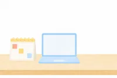
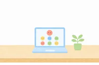
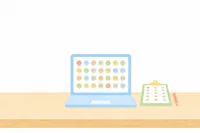
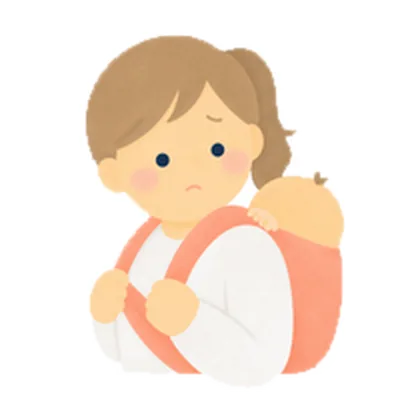

振替
何回でも
無料

日本マンパワーPR
休む回が多くなりそうな人（振替が回数の制限なし・無料）
受けられる日
- 平日昼あり
- 平日夜は、ここに書いていません
- 土日あり
曜日は、開講の回ごとに公式で確かめてね
給付金で半分戻ると、実質
198,000円
総額 396,000円のうち、半分が戻る
いまのあなたは？近いものを、押してみてね

わたしは、どれに近いかな？
ゆっくり横に流れます。さわると止まります。丸いシールは、その学校の特徴です（順位ではありません）
PRは広告（紹介料をいただいている学校）です
振替
何回でも
無料

休む回が多くなりそうな人（振替が回数の制限なし・無料）
受けられる日
曜日は、開講の回ごとに公式で確かめてね
給付金で半分戻ると、実質
198,000円
総額 396,000円のうち、半分が戻る
6人に
講師1人

少人数で練習したい人（6人に講師1人）
受けられる日
平日昼（月・水・木・金）と土日 9:30〜17:30ごろ
給付金で半分戻ると、実質
165,000円
総額 330,000円のうち、半分が戻る
4か月コースが対象
半日
クラス
あり

平日の夜や半日で受けたい人
受けられる日
土日祝・平日夜・半日
給付金で半分戻ると、実質
165,000円
総額 330,000円のうち、半分が戻る
総額
297,000円
運営者の母校
費用をおさえたい人・夜間に受けたい人
受けられる日
土日祝・平日・午前・午後・夜間
給付金で半分戻ると、実質
148,500円
総額 297,000円のうち、半分が戻る
18人まで
の担任制

担任のいる少人数で学びたい人（18人までの担任制）
受けられる日
土日 9:30〜18:30（時期によって平日も）
給付金で半分戻ると、実質
198,000円
総額 396,000円のうち、半分が戻る
平日夜は
20:00〜も

平日の夜に受けたい人（18:50〜／20:00〜）
受けられる日
土日・平日夜（18:50〜／20:00〜）・平日昼
給付金で半分戻ると、実質
249,700円
総額 499,400円のうち、半分が戻る
給付金は、あとから戻ります例：総額 330,000円のとき
モヤン、雇用保険に入ってる？
それなら、基本的には、半額は戻ってくると思って大丈夫！
資格を取って働くと、さらに2割
雇用保険に3年以上（はじめての人は2年以上）入っていて、講座を修了した人が対象です

うわ〜、30万以上かかるんだね。
高い〜…30万以上かかるんだね。高い〜…
入ってるよ
こんなに下がるんだね！
助かるね！
わーい、これなら
はじめられそう！
運営者 岩脇朝子（ちゃん）のひと言
わたしは雇用保険に入っていた期間が足りなくて、給付金は使えなかったよ（笑）。でも、わたしのときは、地域連携
雇用保険の条件に合う人が、割引を使わずに受けたときの金額です。「資格を取って働く」は、修了から1年以内に資格を取り、雇用保険に入って働いている（働きはじめる）場合です。給付金の条件を見る
金額は、公式ページの料金を足した定価の総額です
お金・日程・サポート
お金いくらかかるかな
「総額ざっくりとしか把握できていないから、ちょっと怖い…」
受講を考えた人の声（note・2022年）雇用保険の条件に合う人が、対象のコースを修了したあとの金額です（割引を使わない場合）。先にいったん全額を払います。資格を取って働くと、さらに戻ります。
給付金で実質いくらになるか
日程続けられるかな
「仕事と育児で既にパンパンの毎日。」
受講を考えた人の声（note・2025年）6校とも土日のクラスがあります。平日の夜や半日のクラス、休んだときに振替しやすい学校もあります。

サポート休んだり、つまずいたりしたら
「振り替えができるところを条件にしました」
受講した人の声（note・2024年）実際に通った人の本音
わたしは3児の母で、2026年5月から8月まで、土曜コース全10回を受けて、修了しました。

決めてなくても参加OK
説明会は、申し込む場所ではなく、雰囲気を見に行く場所。気になる2〜3校をのぞいてから決めて大丈夫です。
受けた人の体験記では、説明会のスタッフの対応や、無理にすすめられなかったことが決め手になっていました。
説明会に出ると割引がある学校も。いまの特典 ↓
紹介料をいただいているのは、PRの表示がある学校です。あなたの受講料は変わりません。
6校とも同じ項目・同じ確かめ方で載せています。
11/19 に確かめました
また来たときに、変わったところがわかるように。申し込む前に、公式ページでも確かめてね。
給付金を使う人は、表の締切より先に、ハローワークの手続きの期限が来ます（原則、受講開始日の2週間前）。
いま募集中の回で始めると、4校の案内では、いちばん早い試験は第35回（学科・論述 2027年7月4日（日））です。修了して、申込みの期間に申し込むことが前提です。試験の日は2026年11月15日に公式で確かめました
| 学校 | 次の開講 | 申込みの締切 | いちばん早い試験 （学校の案内では） |
|---|---|---|---|
| 日本産業カウンセラー協会↗ | 12月1日（火）4か月コース | 先着順・定員まで | 第35回 2027年7月4日（日）協会の案内「第35回の国家試験に対応しています」 |
| LEC東京リーガルマインドPR | 12月13日（日） | 各クラスの3日目まで・定員まで | 第35回 2027年7月4日（日）LECの案内「12月生 第35回（2027年7月）」 |
| 地域連携プラットフォームPR | 12月14日（月） | 締切日は公式に書いていません | 第35回 2027年7月4日（日）学校の案内「第35回 2027年7月受験可能コース」 |
| GCDF-Japan↗ | 1月16日（土） | 定員まで | 2027年7月の試験 7月4日（日）学校の案内「2027年7月試験対応」 |
| 日本マンパワーPR | 2月19日（金）・3月19日（金）第36回養成講座 | 2月19日開講は2月12日（金）まで3月19日開講は3月12日（金）まで | 第36回 2027年10月31日（日）学校の案内「最短で第36回国家資格キャリアコンサルタント試験の受験ができます」 |
| リカレントPR | 11月・12月生を募集中 | 公式に書いていません | 公式に書いていません説明会で確かめてね |
説明会のその場で申し込むと
割引22,000円引き
説明会に参加して予約すると
割引10,000円引き
オンライン説明会で使えるかは、説明会で確かめてね子育て中の人は
Amazonギフト券10,000円
特典はどれか1つ11/30までに1月開講へ申し込むと
割引16,500円引き
説明会か個別相談に参加した人日本マンパワーPR
説明会・個別相談会に参加すると
割引11,000円引き
クーポンがもらえます（イベント・ランチタイムセミナーは対象外）リカレントPR
遠方の人は
割引受講料5％引き
| 学校 | 日程のくわしいこと |
|---|---|
| 日本産業カウンセラー協会↗ | 開講教材が届く日。オンラインの1日目は12/4・12/5など給付金12月1日開講の回は、ハローワークの手続きの期限（11/16）が過ぎています（協会の案内） |
| LEC東京リーガルマインドPR | 開講半日クラスの初回給付金12月生は、申込みの期限（受講開始日12/1の2週間前）が過ぎています。12月生の給付金のことは、実施本校への問い合わせの案内です（LECの案内） |
| 地域連携プラットフォームPR | 開講夜間コース（Zoom）締切締切日は公式に書いていません給付金使うなら、ハローワークの手続きは開講（12/14）の2週間前まで |
| GCDF-Japan↗ | 締切振込は開講の14日前、カードは4日前まで給付金使うなら、ハローワークの手続きは第1回講義（1/16）の2週間前まで |
| 日本マンパワーPR | 開講第36回養成講座。2月19日開講は東京・オンライン締切2月19日開講は2027年2月12日（金）・法人は10日（水）まで。3月19日開講は3月12日（金）まで |
| リカレントPR | 開講クラスごとの日にちは公式で確かめてね |
いちばん近い不安を押すと、その質問が出ます
対象のコースで雇用保険の条件に合えば、修了後に半分が戻ります。資格を取って修了後1年以内に働けば7割、賃金も上がれば8割です。
給付金のページを見る試験の受験料は、学科8,900円・実技29,900円です。合格したあと、名簿に登録するときに登録手数料8,000円と登録免許税9,000円がかかります。
登録は5年ごとの更新で、更新には講習（知識8時間以上・技能30時間以上）を受けます。
出典：厚生労働省ホームページ「キャリアコンサルタントになりたい方へ」↗（確かめた日 2026年11月15日）
使えるのは、受講を始める日に、雇用保険に入っていた期間が3年以上ある人です（はじめて使う人は2年以上）。
いま仕事をしていない人も、離職日の翌日から受講を始める日までが1年以内で、同じ期間の条件に合えば対象です。前に教育訓練給付金を受けた人は、受講を始める日の前日から3年以内だと使えません。
自分が当てはまるかは、ハローワークで確かめられます。
給付金のページを見る出典：ハローワークインターネットサービス「教育訓練給付制度」（確かめた日 2026年11月15日）
給付金を使うなら、相談とハローワークの手続きは、原則、受講開始日の2週間前までです。申込みの締切より先に来ます。
説明会に出ると割引がある学校もあります。いまの特典は「いまの募集」の「いまの特典」で。
運営者
岩脇 朝子
夫の転勤で正社員の仕事を手放し、働き方に迷っていたときに、キャリアの相談をして救われました。そこから養成講座で学び、2026年11月の試験を受け終えて、結果待ち（12月16日発表）です。
このサイトについて